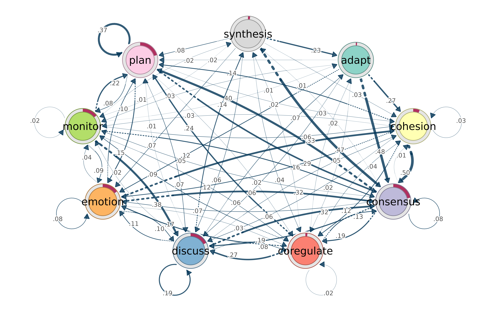
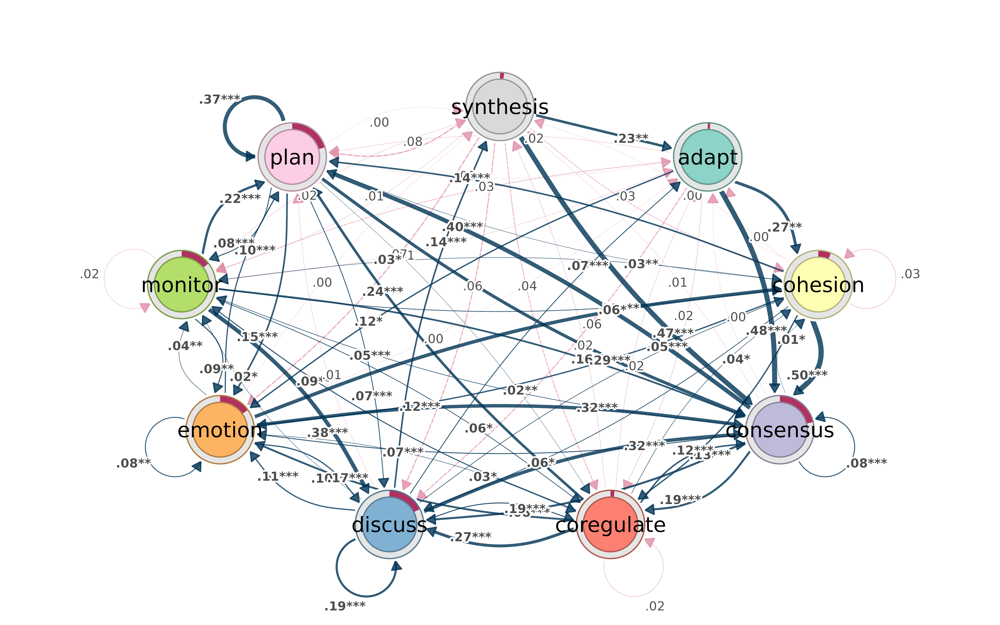
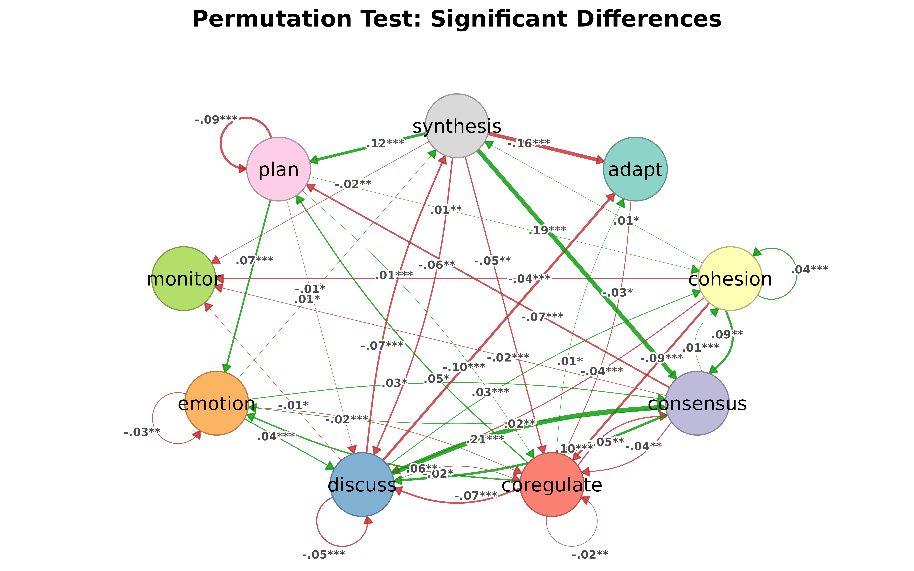

Do we need another network package?
R already has igraph for computation and qgraph for psychometric networks. tidygraph tries to unify things with a dplyr grammar. So why write another one?
The short answer: none of these packages let you go from a raw matrix to a filtered, annotated, publication-ready figure without switching between ecosystems, reformatting objects, or writing boilerplate. cograph tries to close that gap.
This document walks through the specific things cograph does differently, with working examples.
Filtering and selecting — like data frames
In igraph, subsetting a network means calling
induced_subgraph(), delete_edges(), or
indexing into V(g) and E(g). In tidygraph, you
need activate(nodes) |> filter(...). Both approaches
require you to think about the object structure.
cograph lets you filter nodes and edges with expressions that look
like subset():
mat <- matrix(c(
0.0, 0.5, 0.8, 0.1, 0.0,
0.3, 0.0, 0.2, 0.6, 0.4,
0.7, 0.1, 0.0, 0.3, 0.5,
0.0, 0.4, 0.2, 0.0, 0.9,
0.1, 0.3, 0.6, 0.8, 0.0
), 5, 5, byrow = TRUE)
rownames(mat) <- colnames(mat) <- c("Read", "Write", "Plan", "Code", "Test")
net <- as_cograph(mat)Keep only edges above a threshold:
strong <- filter_edges(net, weight > 0.5)
get_edges(strong)
#> from to weight
#> 1 3 1 0.7
#> 2 1 3 0.8
#> 3 5 3 0.6
#> 4 2 4 0.6
#> 5 5 4 0.8
#> 6 4 5 0.9Keep nodes that have high degree and high PageRank — the centrality measures are computed on the fly:
hubs <- filter_nodes(net, degree >= 3 & pagerank > 0.15)
get_nodes(hubs)
#> id label name x y
#> 1 1 Read Read NA NA
#> 2 2 Write Write NA NA
#> 3 3 Plan Plan NA NA
#> 4 4 Code Code NA NA
#> 5 5 Test Test NA NAStructural selections
select_nodes() goes further. It knows about components,
neighborhoods, articulation points, and k-cores — and it computes them
lazily (only what your expression actually references):
# Top 3 nodes by betweenness
top3 <- select_top(net, n = 3, by = "betweenness")
get_nodes(top3)
#> id label name x y
#> 1 1 Write Write NA NA
#> 2 2 Plan Plan NA NA
#> 3 3 Code Code NA NA
# Ego network: everything within 1 hop of "Code"
ego <- select_neighbors(net, of = "Code", order = 1)
get_nodes(ego)
#> id label name x y
#> 1 1 Read Read NA NA
#> 2 2 Write Write NA NA
#> 3 3 Plan Plan NA NA
#> 4 4 Code Code NA NA
#> 5 5 Test Test NA NAFor edges, you can select by structure too:
# Edges involving "Code"
code_edges <- select_edges_involving(net, nodes = "Code")
get_edges(code_edges)
#> from to weight
#> 1 4 2 0.4
#> 2 4 3 0.2
#> 3 1 4 0.1
#> 4 2 4 0.6
#> 5 3 4 0.3
#> 6 5 4 0.8
#> 7 4 5 0.9
# Top 5 edges by weight
top5 <- select_top_edges(net, n = 5)
get_edges(top5)
#> from to weight
#> 1 2 1 0.7
#> 2 1 2 0.8
#> 3 4 2 0.6
#> 4 4 3 0.8
#> 5 3 4 0.9
# Edges between two node sets
between <- select_edges_between(net,
set1 = c("Read", "Write"),
set2 = c("Code", "Test")
)
get_edges(between)
#> from to weight
#> 1 4 1 0.1
#> 2 3 2 0.4
#> 3 4 2 0.3
#> 4 1 3 0.1
#> 5 2 3 0.6
#> 6 2 4 0.4Format in, same format out
If you pass a matrix, you can get a matrix back:
filter_edges(mat, weight > 0.5, keep_format = TRUE)
#> Read Write Plan Code Test
#> Read 0.0 0 0.8 0.0 0.0
#> Write 0.0 0 0.0 0.6 0.0
#> Plan 0.7 0 0.0 0.0 0.0
#> Code 0.0 0 0.0 0.0 0.9
#> Test 0.0 0 0.6 0.8 0.0Same for igraph objects. No lock-in.
Centrality — one call, tidy table
igraph requires a separate function for each centrality measure, and
each returns a different format. page_rank(g) gives you a
list with $vector. betweenness(g) gives a
named numeric. Building a comparison table takes 10+ lines.
In cograph, one call with no arguments returns all 34 measures as a tidy data frame:
centrality(net, digits = 3)
#> node degree_all strength_all closeness_all eccentricity_all coreness_all
#> 1 Read 6 2.5 1.25 0.3 6
#> 2 Write 8 2.8 1.00 0.3 6
#> 3 Plan 8 3.4 1.00 0.4 6
#> 4 Code 7 3.3 1.25 0.3 6
#> 5 Test 7 3.6 1.00 0.4 6
#> harmonic_all diffusion_all leverage_all kreach_all alpha_all power_all
#> 1 26.667 36 -0.110 4 -0.835 -0.885
#> 2 20.000 36 0.069 4 -1.195 -1.046
#> 3 20.833 36 0.069 4 -1.772 -1.046
#> 4 23.333 36 -0.014 4 -2.225 -0.966
#> 5 20.833 36 -0.014 4 -2.366 -1.046
#> radiality_all lin_all decay_all residual_closeness_all dangalchev_all
#> 1 2.05 20 4.491 4.491 4.491
#> 2 2.00 16 4.370 4.370 4.370
#> 3 2.00 16 4.374 4.374 4.374
#> 4 2.05 20 4.486 4.486 4.486
#> 5 2.00 16 4.374 4.374 4.374
#> generalized_closeness_all harary_all average_distance_all barycenter_all
#> 1 4.491 222.222 0.133 1.25
#> 2 4.370 133.333 0.167 1.00
#> 3 4.374 142.361 0.167 1.00
#> 4 4.486 161.111 0.133 1.25
#> 5 4.374 142.361 0.167 1.00
#> wiener_all lobby_all entropy_all semilocal_all clusterrank_all bottleneck_all
#> 1 0.8 6 2 184 20.800 2
#> 2 1.0 7 2 224 13.714 4
#> 3 1.0 7 2 224 13.714 4
#> 4 0.8 7 2 208 16.857 3
#> 5 1.0 7 2 208 16.857 3
#> centroid_all mnc_all dmnc_all lac_all closeness_vitality_all integration_all
#> 1 0 4 0.189 4.000 0.8 6
#> 2 -1 4 0.189 2.500 2.0 6
#> 3 -1 4 0.189 2.500 1.8 6
#> 4 -1 4 0.568 3.143 1.4 6
#> 5 -2 4 0.568 3.143 2.0 6
#> expected_all gilschmidt_all participation_all within_module_z_all gateway_all
#> 1 30 1 NA NA NA
#> 2 28 1 NA NA NA
#> 3 28 1 NA NA NA
#> 4 29 1 NA NA NA
#> 5 29 1 NA NA NA
#> gravity_all collective_influence_all local_hindex_all hindex_strength_all
#> 1 180 0 6 3
#> 2 168 0 6 3
#> 3 168 0 6 3
#> 4 174 0 6 3
#> 5 174 0 6 3
#> onion_all reaching_local_all betweenness eigenvector pagerank authority hub
#> 1 1 0.625 3.0 0.582 0.151 0.540 0.736
#> 2 2 0.462 3.5 0.674 0.172 0.666 0.800
#> 3 2 0.613 5.0 0.882 0.216 0.956 0.725
#> 4 2 0.600 4.0 0.966 0.222 1.000 0.763
#> 5 2 0.588 0.0 1.000 0.240 0.872 1.000
#> constraint transitivity subgraph laplacian load current_flow_closeness
#> 1 0.761 0.400 212.537 88 12.0 0.765
#> 2 0.773 0.214 329.433 128 12.5 0.861
#> 3 0.658 0.214 329.433 128 14.0 0.917
#> 4 0.761 0.286 274.892 102 13.0 0.898
#> 5 0.711 0.286 274.892 114 9.0 0.960
#> current_flow_betweenness voterank percolation stress flow_betweenness
#> 1 0.221 0.4 0.250 0 5.0
#> 2 0.270 1.0 0.292 2 5.9
#> 3 0.312 0.8 0.417 2 7.3
#> 4 0.201 0.6 0.333 1 5.4
#> 5 0.313 0.2 0.000 1 6.2
#> communicability communicability_betweenness random_walk
#> 1 31.171 0.357 0.055
#> 2 39.790 0.583 0.066
#> 3 39.790 0.582 0.066
#> 4 32.960 0.532 0.064
#> 5 39.790 0.466 0.059
#> topological_coefficient bridging local_bridging effective_size diversity
#> 1 1.667 0.636 0.035 3 0.868
#> 2 1.375 0.379 0.014 5 0.952
#> 3 1.375 0.541 0.014 5 0.916
#> 4 1.536 0.600 0.021 4 0.903
#> 5 1.536 0.000 0.021 4 0.927
#> cross_clique markov salsa leaderrank trophic_level second_order infection
#> 1 16 0.238 0.75 0.869 NA 0.500 219.533
#> 2 16 0.362 1.00 1.078 NA 0.129 184.781
#> 3 16 0.362 1.00 1.078 NA 0.129 184.781
#> 4 16 0.339 1.00 1.042 NA 0.125 203.821
#> 5 16 0.279 0.75 0.934 NA 0.545 203.821
#> nonbacktracking spanning_tree katz hubbell information pairwisedis
#> 1 0.846 1.973 1.132 4.280 0.945 0.4
#> 2 0.948 2.382 1.154 4.582 1.072 0.4
#> 3 0.948 2.273 1.211 4.743 1.143 0.4
#> 4 0.836 1.961 1.214 4.740 1.093 0.4
#> 5 1.000 2.443 1.216 5.220 1.152 0.4
#> prestige_domain prestige_domain_proximity brokerage_coordinator
#> 1 4 0.8 NA
#> 2 4 1.0 NA
#> 3 4 1.0 NA
#> 4 4 1.0 NA
#> 5 4 0.8 NA
#> brokerage_itinerant brokerage_representative brokerage_gatekeeper
#> 1 NA NA NA
#> 2 NA NA NA
#> 3 NA NA NA
#> 4 NA NA NA
#> 5 NA NA NA
#> brokerage_liaison
#> 1 NA
#> 2 NA
#> 3 NA
#> 4 NA
#> 5 NAThat includes degree, strength, betweenness, closeness, PageRank, eigenvector, but also less common ones like load, current-flow betweenness, voterank, percolation, diffusion, and leverage — all computed natively, without extra packages.
If you only need a subset:
centrality(net, measures = c("degree", "betweenness", "pagerank"), digits = 3)
#> node degree_all betweenness pagerank
#> 1 Read 6 3.0 0.151
#> 2 Write 8 3.5 0.172
#> 3 Plan 8 5.0 0.216
#> 4 Code 7 4.0 0.222
#> 5 Test 7 0.0 0.240Need just one measure as a named vector? Use the wrapper:
centrality_pagerank(net)
#> Read Write Plan Code Test
#> 0.1507079 0.1715631 0.2157373 0.2223834 0.2396084
centrality_betweenness(net)
#> Read Write Plan Code Test
#> 3.0 3.5 5.0 4.0 0.0You can normalize, sort, and round in the same call:
centrality(net, measures = c("degree", "betweenness", "pagerank"),
normalized = TRUE, sort_by = "pagerank", digits = 3)
#> node degree_all betweenness pagerank
#> 1 Test 0.875 0.0 1.000
#> 2 Code 0.875 0.8 0.928
#> 3 Plan 1.000 1.0 0.900
#> 4 Write 1.000 0.7 0.716
#> 5 Read 0.750 0.6 0.629Edge-level centrality
edge_centrality(net, sort_by = "betweenness", digits = 3)
#> from to weight betweenness overlap shared_neighbors triangles
#> 1 Code Plan 0.2 8.0 1 3 3
#> 2 Read Code 0.1 7.0 1 3 3
#> 3 Plan Write 0.1 6.5 1 3 3
#> 4 Write Read 0.3 4.0 1 3 3
#> 5 Test Read 0.1 3.0 1 3 3
#> 6 Write Test 0.4 2.5 1 3 3
#> 7 Plan Test 0.5 1.5 1 3 3
#> 8 Test Write 0.3 1.0 1 3 3
#> 9 Write Plan 0.2 1.0 1 3 3
#> 10 Plan Code 0.3 1.0 1 3 3
#> 11 Plan Read 0.7 0.0 1 3 3
#> 12 Read Write 0.5 0.0 1 3 3
#> 13 Code Write 0.4 0.0 1 3 3
#> 14 Read Plan 0.8 0.0 1 3 3
#> 15 Test Plan 0.6 0.0 1 3 3
#> 16 Write Code 0.6 0.0 1 3 3
#> 17 Test Code 0.8 0.0 1 3 3
#> 18 Code Test 0.9 0.0 1 3 3
#> reciprocated reverse_weight weight_ratio
#> 1 TRUE 0.3 1.500
#> 2 FALSE NA NA
#> 3 TRUE 0.2 2.000
#> 4 TRUE 0.5 1.667
#> 5 FALSE NA NA
#> 6 TRUE 0.3 0.750
#> 7 TRUE 0.6 1.200
#> 8 TRUE 0.4 1.333
#> 9 TRUE 0.1 0.500
#> 10 TRUE 0.2 0.667
#> 11 TRUE 0.8 1.143
#> 12 TRUE 0.3 0.600
#> 13 TRUE 0.6 1.500
#> 14 TRUE 0.7 0.875
#> 15 TRUE 0.5 0.833
#> 16 TRUE 0.4 0.667
#> 17 TRUE 0.9 1.125
#> 18 TRUE 0.8 0.889Network-level summary
One-row data frame with density, diameter, transitivity, centralization, reciprocity, and more:
network_summary(net, digits = 3)
#> node_count edge_count density component_count diameter mean_distance min_cut
#> 1 5 18 0.9 1 0.8 0.35 3
#> centralization_degree centralization_in_degree centralization_out_degree
#> 1 0.125 0.1 0.1
#> centralization_betweenness centralization_closeness centralization_eigen
#> 1 0.028 0 0.097
#> transitivity reciprocity assortativity_degree hub_score authority_score
#> 1 1.009 0.8 -0.25 NA NAAdd detailed = TRUE for mean/sd of node-level measures,
or extended = TRUE for girth, radius, global efficiency,
etc.
Community detection — one call
igraph has cluster_louvain(),
cluster_walktrap(), etc. — different function per
algorithm, inconsistent parameter names. cograph wraps all of them
behind one function with a default:
# Undirected network for community detection
sym <- (mat + t(mat)) / 2
diag(sym) <- 0
cograph::communities(sym)
#> Community structure (louvain)
#> Nodes: 5 | Communities: 2 | Modularity: 0.0985
#> Sizes: 2, 3
#>
#> node community
#> Read 1
#> Write 2
#> Plan 1
#> Code 2
#> Test 2Pick a different algorithm by name, or use two-letter shorthands:
cograph::communities(sym, method = "walktrap")
#> Community structure (walktrap)
#> Nodes: 5 | Communities: 2 | Modularity: 0.0985
#> Sizes: 2, 3
#>
#> node community
#> Read 1
#> Write 2
#> Plan 1
#> Code 2
#> Test 2
com_fg(sym) # fast greedy
#> Community structure (fast_greedy)
#> Nodes: 5 | Communities: 2 | Modularity: 0.0985
#> Sizes: 3, 2
#>
#> node community
#> Read 2
#> Write 1
#> Plan 2
#> Code 1
#> Test 1
com_im(mat) # infomap (works on directed too)
#> Community structure (infomap)
#> Nodes: 5 | Communities: 1 | Modularity: 0
#> Sizes: 5
#>
#> node community
#> Read 1
#> Write 1
#> Plan 1
#> Code 1
#> Test 1If you just want a node-to-community data frame:
detect_communities(sym, method = "walktrap")
#> Community structure (walktrap)
#> Nodes: 5 | Communities: 2 | Modularity: 0.0985
#> Sizes: 2, 3
#>
#> node community
#> Read 1
#> Write 2
#> Plan 1
#> Code 2
#> Test 2Quality and significance
How good is the partition?
comm <- com_wt(mat)
det <- detect_communities(mat, method = "walktrap")
cluster_list <- split(det$node, det$community)
cqual(mat, cluster_list)
#> Cluster Quality Metrics
#> =======================
#>
#> Global metrics:
#> Modularity: 0
#> Coverage: 1
#> Clusters: 1
#>
#> Per-cluster metrics:
#> cluster cluster_name n_nodes internal_edges cut_edges internal_density
#> 1 1 5 7.8 0 0.39
#> avg_internal_degree expansion cut_ratio conductance
#> 3.12 0 NA 0Is the modularity significantly higher than chance? Permutation test against a null model:
csig(mat, comm, n_random = 200, seed = 1)
#> Cluster Significance Test
#> =========================
#>
#> Null model: configuration (n = 200 )
#> Observed modularity: 0
#> Null mean: 0.1486
#> Null SD: 0.0781
#> Z-score: -1.9
#> P-value: 0.97139
#>
#> Conclusion: No significant community structure (p >= 0.05)Compare two solutions
comm2 <- com_fg(mat)
compare_communities(comm, comm2, method = "nmi")
#> [1] 0Consensus clustering
Run a stochastic algorithm many times and threshold the co-occurrence matrix:
com_consensus(mat, method = "infomap", n_runs = 50, seed = 1)
#> Community structure (consensus_infomap)
#> Nodes: 5 | Communities: 1 | Modularity: 0
#> Sizes: 5
#>
#> node community
#> Read 1
#> Write 1
#> Plan 1
#> Code 1
#> Test 1Format interoperability
cograph accepts matrices, edge lists, igraph, statnet, qgraph, and tna objects natively. And it converts back:
net <- as_cograph(mat)
# To igraph
g <- to_igraph(net)
class(g)
#> [1] "igraph"
# To matrix
m <- to_matrix(net)
m[1:3, 1:3]
#> Read Write Plan
#> Read 0.0 0.5 0.8
#> Write 0.3 0.0 0.2
#> Plan 0.7 0.1 0.0
# To edge list
head(to_df(net))
#> from to weight
#> 1 Write Read 0.3
#> 2 Plan Read 0.7
#> 3 Test Read 0.1
#> 4 Read Write 0.5
#> 5 Plan Write 0.1
#> 6 Code Write 0.4No format lock-in. Use cograph for what it’s good at, convert back when you need something else.
Robustness, motifs, backbone
A few more things that would otherwise require separate packages:
Robustness analysis
How does the network hold up when you remove nodes by betweenness (targeted attack) vs. random failure?
rob <- robustness(mat, measure = "betweenness", strategy = "sequential", seed = 1)
rob_rand <- robustness(mat, measure = "random", n_iter = 50, seed = 1)
# Area under curve — higher means more robust
robustness_auc(rob)
#> [1] 0.5
robustness_auc(rob_rand)
#> [1] 0.5Disparity filter (backbone extraction)
Keep only edges that carry a disproportionate share of a node’s weight:
backbone <- disparity_filter(mat, level = 0.5)
backbone
#> Read Write Plan Code Test
#> Read 0 1 1 0 0
#> Write 0 0 0 1 1
#> Plan 1 0 0 0 1
#> Code 0 1 0 0 1
#> Test 0 1 1 1 0Motif census
Count triad types with significance testing against a configuration model:
motif_census(mat, n_random = 100)
#> Network Motif Analysis
#> Size: 3-node motifs (directed) | Null: configuration (n=100)
#>
#> motif count null_mean null_sd z_score p_value significant
#> 003 0 0.00 0.0000000 0.0000000 1.000000e+00 FALSE
#> 012 0 0.00 0.0000000 0.0000000 1.000000e+00 FALSE
#> 102 0 0.16 0.3684529 -0.4342481 6.641083e-01 FALSE
#> 021D 0 0.00 0.0000000 0.0000000 1.000000e+00 FALSE
#> 021U 0 0.77 0.8973024 -0.8581277 3.908220e-01 FALSE
#> 021C 0 1.26 1.0112499 -1.2459829 2.127707e-01 FALSE
#> 111D 0 0.13 0.3666667 -0.3545455 7.229301e-01 FALSE
#> 111U 0 0.35 0.5751592 -0.6085272 5.428379e-01 FALSE
#> 030T 0 0.38 0.6159496 -0.6169336 5.372785e-01 FALSE
#> 030C 0 1.14 0.8647999 -1.3182241 1.874286e-01 FALSE
#> 201 0 0.84 1.1434486 -0.7346198 4.625711e-01 FALSE
#> 120D 0 0.64 0.7722458 -0.8287516 4.072450e-01 FALSE
#> 120U 1 1.58 1.2405603 -0.4675307 6.401203e-01 FALSE
#> 120C 0 0.29 0.5373899 -0.5396454 5.894416e-01 FALSE
#> 210 4 1.39 1.2940813 2.0168748 4.370858e-02 TRUE
#> 300 5 0.15 0.3859921 12.5650241 3.287749e-36 TRUE
#>
#> Over-represented: 2 | Under-represented: 0Working with probabilistic networks
cograph was built with transition networks in mind — matrices where rows sum to 1 and edges are probabilities, not just weights. This matters in a few places.
Smart weight inversion
Path-based centrality measures (betweenness, closeness, harmonic) need distances, not probabilities. For transition networks, a high-probability edge should mean short distance. cograph handles this automatically:
- For tna objects: weights are inverted (distance = 1/probability)
- For other networks: weights are used as-is (standard igraph convention)
No manual toggle needed.
First-class tna support
If you use the tna package for Transition Network Analysis, cograph understands its objects directly:

Bootstrap results render automatically — significant transitions as solid edges, non-significant as dashed:

Permutation test results get color-coded by group effect:
model1 <- tna(group_regulation[1:1000,])
model2 <- tna(group_regulation[1001:2000,])
perm <- permutation_test(model1, model2, iter = 1000)
splot(perm)
Group comparisons with plot_compare() show element-wise
probability differences, with donuts on nodes for initial state
shifts.
qgraph compatibility
Researchers coming from qgraph can use familiar parameter names —
vsize, asize, edge.color, etc. —
they are translated automatically. When both the cograph name and the
qgraph alias are present, the cograph name wins.
Nestimate integration
cograph also plots Nestimate objects (bootstrap forests, permutation results, glasso networks) without importing the package — dispatch is by class name only.
Summary
cograph is not trying to replace igraph’s graph algorithms or tidygraph’s data manipulation. It fills a different gap: going from data to a filtered, annotated, publication-ready network figure with minimal code, while staying interoperable with everything else in the R network ecosystem.
The main ideas:
- Filter and select with data-frame-like expressions, not object-specific APIs
- Centrality as a tidy data frame, not a list of separate calls
- Community detection behind one function with shorthands, quality metrics, and significance tests
- Statistical annotation (CIs, p-values, stars) directly on the figure
- No format lock-in — matrix/igraph/statnet/tna in and out
- Probabilistic networks handled correctly out of the box